Este guia cobre o básico necessário sobre programação em R para acompanhar o curso Introdução à Inferência Causal. O conteúdo deste guia provavelmente será mais útil para iniciantes, ainda que também sirva para usuários(as) com nível intermediário aprenderem algumas coisas úteis para estimar quantias de interessa: efeitos causais médios, estimadores estratificados ou condicionais, entre outros. O conteúdo do guia está todo separado em seções e subseções. Caso tenha algo específico em mente, pule para a parte que te interessar.
Para usar o guia, navegue pelo conteúdo, tente entender cada código, reproduzindo e adaptando exemplos, e siga pelas seções. O material avança rapidamente, o que pode tornar necessário ir e voltar várias vezes no texto. Caso tenha dúvidas, use o bom e velho Ctrl+f para procurar um tópico específico. Outra dica: use o www.google.com para procurar coisas que não encontrar aqui; na esmagadora maioria das vezes, ele terá uma resposta para te oferecer.
R);R;Abrindo diretamente o R, a primeira coisa que vemos nele é um console - que nada mais é do que uma caixa de texto onde colocamos nosso código. Experimente digitar, por exemplo, 2 ali.
2O R reproduzirá o 2 digitado seguido de # e [], geralmente com algum número dentro. No primeiro caso, # indica um comentário: tudo o que vem sucedido de # o R não executará.
# Isto é um comentário
# O 2, abaixo, não é um comentário
2
# O 2, abaixo, é um comentário
# 2O R também serve como calculadora: basta usar operadores matemáticos e números. Aqui vão alguns exemplos (tente outros).
2 + 2 # adição
2 - 2 # subtração
2 / 2 # divisão
2 * 2 # multiplicação
2^2 # 2 ao quadrado
2^3 # 2 ao cubo
3 %/% 2 # divisão sem resto
3 %% 2 # resto da divisãoO R também possui muitas funções - parte da potencialidade dele vem daí, aliás. Funções servem para realizar ações no R, como calcular a raiz quadrada de um número.
# a funcao sqrt() retorna a raiz quadrada de um número
sqrt(4) # raiz quadrado de 4Outros exemplos de funções.
log(4) # logaritmo natural de 4
log10(4) # logaritmo base 10 de 4
sum(2, 2) # soma dois ou mais númerosPodemos armazenar objetos no R com o operador <- (menor seguido de hífen). Basicamente, ele diz ao R para armazenar um valor num objeto para podermos acessá-lo posteriormente. Podemos salvar o número 2 num objeto x.
x <- 2E depois usá-lo diretamente para realizar outras operações.
x
x + 1
x / 2
x^2Também podemos armazenar texto num objeto.
texto <- "texto"
texto
x <- "outro texto"
xA função print() nos permite visualizar o conteúdo armazenado num objeto (digitar o nome dele no console e executar é o equivalente disso, mas print pode ser útil em algumas situações).
print(texto)
print(x)No R, cada tipo de informação possui uma classe. Números são numeric ou integer (para números inteiros); texto é character (também pode ser factor). Também existem valores lógicos (TRUE ou FALSE, ou T e F, respectivamente), complexos, etc. Vamos ver os mais comuns.
class("a") # "a" é character
is.character("a") # "a" é character
class(2) # é numeric
is.numeric(2) # é numeric
class(2L) # 2L (o L força o número a ficar inteiro) é integer
is.integer(2L) # 2L é integer
class(TRUE) # TRUE é logical
is.logical(TRUE) # TRUE é logicalValores lógicos são úteis para fazer testes relacionais (comparações) com valores. Podemos verificar se 2 é maior que 1, por exemplo.
2 > 1Ou se 2 é maior que 3.
2 > 3Outros operadores relacionais úteis.
2 > 1 # maior
2 < 1 # menor
2 >= 1 # maior ou igual
2 <= 1 # menor ou igual
2 == 1 # igual (note que existem dois '=' aqui)
2 != 1 # diferente
!TRUE # inverso (não é bem um operador, mas é útil para inverter o resultado de um operador)Podemos criar objetos e realizar operações no R de forma simples, como vimos. No entanto, algumas coisas devem ser evitadas quando escrevemos nosso código, seja para evitar erros ou para facilitar a compreensão.
A recomendação mais básica neste sentido é: evite criar objetos com nomes que comecem com números, caracteres especiais ou nomes de funções. Algumas destas coisas produzirão erros imediatos; outras, podem complicar códigos inteiros. Alguns exemplos.
# Exemplos de nomes de objetos que produzem erros
2x <- 1
_x <- 1
&x <- 1
# Exemplos de nomes de objetos que não produzem erros imediatos
class <- 1
print <- 1## Error: <text>:2:2: unexpected symbol
## 1: # Exemplos de nomes de objetos que produzem erros
## 2: 2x
## ^Também note que o R é case sensitive, o que significa que A não é a mesma coisa que a.
A <- 1
print(a)## Error in print(a): object 'a' not foundSempre que criar um objeto armazenando texto, não esqueça das aspas (outra forma de cometer erros no R bastante comum).
x <- texto
x <- "texto"
xPor fim, sempre que abrir parênteses, não esqueça de fechá-los (caso contrário, aparecerá um + no console, indicando que o R espera mais conteúdo). Estas e outras recomendações comuns para evitar erros podem ser vistas aqui (em inglês).
Isto não é mandatório, mas algumas noções de estilo - i.e., de como organizar o código - nos ajudam a compreender e partilhar códigos, tanto nossos quanto os de outras pessoas. Resumidamente, as principais considerações aqui são:
_ (underscore);<- a = (eles fazem a mesma coisa).Exemplos.
x<-1 # Ruim
x <- 1 # OK
x+x+x+x # Ruim
x + x + x + x # OK
print (x) # Ruim
print(x) # OK
x = 1 # Ruim
x <- 1 # OK
OBJETO <- 1 # Ruim
objeto <- 1 # OK
meu.objeto <- 1 # Ruim
meu_objeto <- 1 # OK
objeto_com_nome_excessivamente_grande <- 1 # Ruim
objeto <- 1 # OKUm guia completo de estilo, em inglês, pode ser encontrado neste link.
Podemos armazenar mais de um valor num objeto: para isto, criamos um vetor. Vetores armazenam uma sequência de valores em ordem, e cada um fica salvo num elemento do vetor. Usamos a função c para criar um vetor.
x <- c(1, 2, 3) # vetor com três elementos numéricos
y <- c("a", "b", "c") # vetor com três elementos de textoPodemos realizar operações com vetores da mesma forma que com valores únicos (na verdade, valores únicos são vetores com apenas um elemento). Tente outras além destas.
x <- c(1, 2, 3, 4, 5)
x + 1
x - 1
x^2
c(1, 2, 3) + c(1, 2, 3)Outras formas de criar vetores.
seq(1, 10, by = 1) # cria um vetor de 1 a 10
seq(1, 10, by = 0.5) # vetor de 1 a 10 com intervalos de 0.5
rep(1, 10) # vetor com 10 elementos, todos iguais a 1
rep(c(1, 2), 5) # vetor com 10 elementos, c(1, 2) repetidos 5 vezes
rep(c(1, 2), each = 5) # vetor com 10 elementos, 1 repetido 5 vezes, 2 repetido 5 vezes
1:10 # vetor de 1 a 10
10:1 # vetor de 10 a 1
numeric(10) # vetor com 10 elementos
x <- c(1, 2)
y <- c(x, 3)
y # vetor com tres elementos
x <- c(1, 2)
y <- c(1, 2)
z <- c(x, y, 1, 2) # vetor com seis elementos
z <- c(z, z) # vetor com 12 elementos
w <- rnorm(10) # vetor com 10 elementos gerados aleatoriamente (distribuição normal, média 0)Para saber o tamanho ou a classe de um vetor, usamos length e class (que já vimos).
x <- 1:100
length(x) # número de elementos de x
class(x) # classe de x (integer)
tamanho_x <- length(x) # salva o tamanho de x num novo objetoAcessamos um ou mais elementos de um vetor com []. O jeito mais fácil de fazer isto é passar a posição do elemento para dentro dos colchetes.
x <- c(1, 5, 10, 15, 20)
x
x[1] # acessa o primeiro elemento do vetor
x[3] # acessa o terceiro elemento do vetor
x[1 + 1] # acessa o segundo elemento do vetor
x[length(x)] # acessa o último elemento do vetor
x[c(1, 2)] # acessa o primeiro e o segundo elementos do vetor
x[c(1, 3, length(x))] # acessa o primeiro, o terceiro e o último elementos do vetor
x[-2] # acessa todos os elementos do vetor, menos o segundo
x[-c(1, 2)] # acessa todos os elementos do vetor, menos o primeiro e o segundoOutro jeito, mais prático em algumas situações, é passar um vetor com valores lógicos de mesmo tamanho do vetor original para dentro dos colchetes.
x <- c(1, 2, 3)
x
x[c(TRUE, FALSE, FALSE)] # acessa o primeiro elemento
x[c(FALSE, TRUE, FALSE)] # acessa o segundo elemento
x[c(T, F, T)] # acessa o primeiro e o último elementosCombinando operadores relacionais e vetores, podemos selecionar elementos de acordo com algum critério (como acessar apenas elementos maiores que 2).
x <- c(1, 2, 3, 4, 5)
x
x > 3
x[x > 3] # acessa apenas elementos maiores que 3
x[x == 2] # acessa apenas elementos iguais a 2
x[x == 1 | x == 5] # acessa apenas elementos iguais a 1 ou elementos iguais a 5
x[x > 2 & x < 4] # acessa apenas elementos maiores que 2 e menores que 4
x[x != 3] # acessa apenas elementos diferentes de 3O mesmo vale para vetores com character.
vec <- c("a", "c", "e")
vec
vec[vec == "a"] # acessa apenas elementos iguais a "a"
vec[vec != "c"] # acessa apenas elementos diferentes de "c"Sabendo como criar objetos e indexar vetores, combinamos as duas coisas para modificar e realizar operações com vetores. Um exemplo: alterar o valor do primeiro elemento de um vetor.
x <- 1:5
x[1] <- 99 # muda o valor do primeiro elemento do vetor para 99
x
x[c(1, 2)] <- c(99, 100) # muda o valor do primeiro e do segundo elementos do vetorMas também podemos modificar elementos baseados numa condição (operadores relacionais novamente).
x <- 1:10
x[x < 5] <- 99
x
y <- letters[1:5]
y[y == "a"] <- "X"
y
z <- rnorm(100)
z[z > 0 & z < 1] <- 99
zPartindo destas operações mais simples, podemos criar condições mais complexas - como transformar apenas números pares em 0.
x <- 1:100
x[x %% 2 == 0] <- 0 # número maior que 0 que seja divisível por 2 sem resto é par
xVetores não armazenam informações de diferentes classes - ao fim, elas são transformadas para uma das classes existentes. Teste variações dos exemplos abaixo para entender como o R força essas conversões.
x <- c(1, "a")
x # o número 1 vira texto "1"
class(x) # character
x <- c(1, TRUE, FALSE)
x # TRUE é convertido para 1; FALSE é convertido para 0
class(x) # numeric
x <- c(1L, 2.3)
x # 1L (integer) é convertido para decimal (numeric)
class(x) # numeric
x <- c(TRUE, "a")
x # TRUE vira texto "TRUE"
class(x) # characterResumindo a conversão de classes básicas:
character tem precedência sobre as outras classes;logical pode ser convertido para numeric;integer pode ser convertido para numeric (ganha casas decimais).No R, existem algumas funções para converter explicitamente um classe em outra. Seguem algumas.
x <- c(1.1, 2.2, 3.3, 4.4, 5.5)
class(x) # numeric
x <- as.integer(x)
x
class(x) # agora é integer
x <- as.character(x)
x
class(x) # agora é character
x <- as.numeric(x) # converte de character para numeric
x
class(x)
x <- as.integer(x) # converte de numeric para integer
class(x)
x <- as.logical(x) # converte x para logical (tudo o que for diferente de 0 vira TRUE)
x
class(x)Ainda assim, não podemos fazer conversões como esta.
x <- c("Texto")
as.numeric(x)Neste caso, x vira NA, que é valor logical especial no R para representar missings (valores ausentes). Como o NA, o R também possui alguns valores especiais. Vamos vê-los na sequência.
Como dito anteriormente, NA é um valor logical particular, e serve para indicar missings. Mas, apesar de ser logical (TRUE ou FALSE), ele não muda a classe de um vetor de outro tipo. Exemplo.
x <- NA
class(x) # NA é logical
class(NA) # NA é logical
x <- c(1, 2, 3, NA)
class(x) # mas 'x' é numeric
z <- c("a", "b", NA)
class(z) # e z é character
class(z[3]) # assim como o terceiro elemento de z, que armazena o NABasicamente, isto significa que o NA pode ser convertido para qualquer classe a partir de logical e que, no fundo, ele serve para dizer o seguinte: o R não sabe qual valor NA deve assumir, mas certamente é um valor da mesma classe do restante do vetor (afinal, todos os elementos de um vetor precisam ser da mesma classe).
x <- NA
x <- as.integer(NA)
class(x) # NA agora é integer
x <- NA
x <- as.character(NA)
class(x) # NA agora é characterPodemos testar se um valor ou objeto é NA com a função is.na (este é o método mais apropriado de fazer isto, por sinal).
x <- c(1, 2, NA)
is.na(x[3]) # como testar se um valor é NA
x[3] == NA # como NÃO testar se um valor é NANote também que qualquer operação feita num objeto NA retorna NA (às vezes também dá erro).
NA + 1
NA / 2Outros valores especiais são Inf, para positivo e negativo infinito, e NaN, que literalmente significa “não é um número” (not a number). Exemplos.
# Exemplos de números infinitos
Inf + 1
-Inf + 1
1 / 0
x <- Inf
class(x) # infinito é numeric
is.infinite(x) # mas infinito
# Exemplos de not a number
log(-2) # não existe log de números negativos
0 / 0
x <- NaN
class(x) # NaN também é numeric
is.nan(x)Outro valor, este não tão comum (a depender da aplicação): o NULL, que indica um objeto nulo, ou vazio, sem classe e sem valores.
class(NULL) # classe "NULL"
NULL + 1 # vira NULL
c(1, 2, 3, NULL) # desaparece do fim do vetor
is.null(NULL) # maneira de testar se um objeto é NULLComo um objeto NULL, por definição, é vazio, podemos usar este valor especial para apagar o conteúdo de objetos de outras classes.
x <- c(1, 2, 3)
x <- NULL
x # apaga o vetor xMas perceba que isto não funciona para apagar elementos dentro de um vetor. Para remover um objeto da memória no R, contudo, usamos a função rm - é só passar para ela o nome do objeto que queremos remover.
x <- c(1, 2, 3)
rm(x)É importante reconhecer estes valores especiais para, se preciso, podermos alterá-los: como quando precisamos transformar missings em outras coisas.
x <- c(2, 5.6, 24, 45, 89.23, NA)
is.na(x)
x[is.na(x)] <- 999 # trocamos o NA por 999
xVetores numéricos ou inteiros armazenam números que podem ser analisados estatisticamente. E, para tanto, o R oferece um conjunto de funções nativas para realizar as mais diversas análises e testes.
Vimos funções anteriormente, mas cabe lembrar que elas (como funções na matemática) recebem uma informação (no R, geralmente um objeto) e retornam outra. Dá para saber se um objeto é uma função pelas funções class e is.function.
class(mean) # mean() é uma função
is.function(mean)
class(class) # assim como a própria função class() é uma função
is.function(class)
is.function(is.function) # ou como is.function() é uma funçãoAlgumas das estatísticas descritivas mais usadas.
# Criamos um vetor aleatoriamente com distribuição normal e média 0
x <- rnorm(100)
mean(x) # média de x
median(x) # mediana de x
weighted.mean(x, x) # média ponderada (o segundo x deve ser um vetor com os pesos)
sd(x) # desvio-padrão de x
max(x) # máxima de x
min(x) # mínima de x
quantile(x) # quantis de x
summary(x) # retorna várias estatísticas básicas de uma só vezÀs vezes, uma forma prática de usar funções é aninhando elas, isto é, passando uma função para dentro de outra. Exemplo.
mean(seq(1, 10))Como dá para intuir, seq(1, 10) cria um vetor de 1 a 10 e, diretamente, este vetor é passado para dentro da função mean - sem a necessidade de salvar o resultado de seq(1, 10) num objeto para, então, passá-lo para a função mean.
Este uso aninhado de funções pode ir além.
c(1, 2, c(1, 2, c(1, 2, c(1, 2, c(1, 2, c(1, 2))))))Mas, à medida que vamos aninhando funções, fica mais difícil entender o código. É por esta razão, principalmente, que o aninhamento de funções é melhor usado apenas em tarefas mais simples.
A maioria das funções no R-base possui argumentos opcionais que podem ser alterarados para atender a alguma necessidade. Geralmente, passamos estes argumentos para dentro das funções via =, como abaixo.
x <- c(1, 2, 3, 4, NA)
mean(x) # retorna NA
mean(x, na.rm = TRUE) # na.rm = TRUE para ignorar os NAO uso de cada função, com a documentação completa dos argumentos opcionais, pode ser visto com via função help: basta passar o nome da função desejada para ela.
help(mean)O R também possui um potente arsenal nativo de implementações gráficas. Como no caso das estatísticas básicas, acessamos estas ferramentais via funções. Podemos começar com uma das mais simples: o histograma.
x <- rnorm(100) # cria um vetor
hist(x) # a função hist() cria um histograma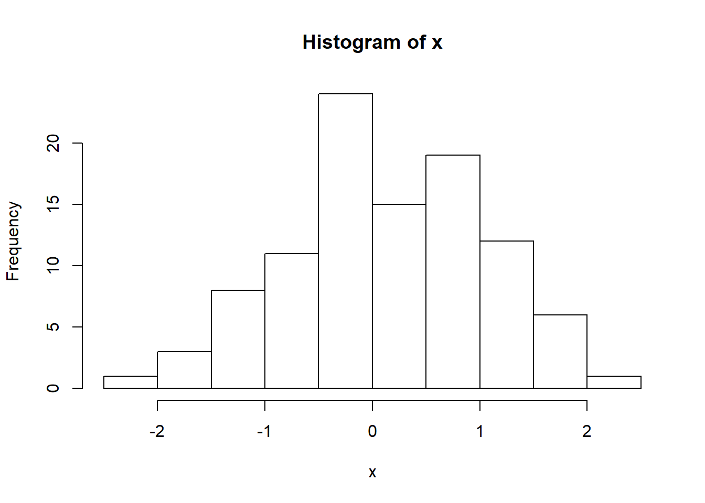
A função hist, assim como as demais funções gráficas nativas do R, possui diversos argumentos opcionais que nos permitem controlar a aparência do gráfico.
Incluímos títulos e mudamos o nome dos eixos com os argumentos main, xlab e ylab, respectivamente.
hist(x, main = "Um histograma", xlab = "Eixo X", ylab = "Eixo Y")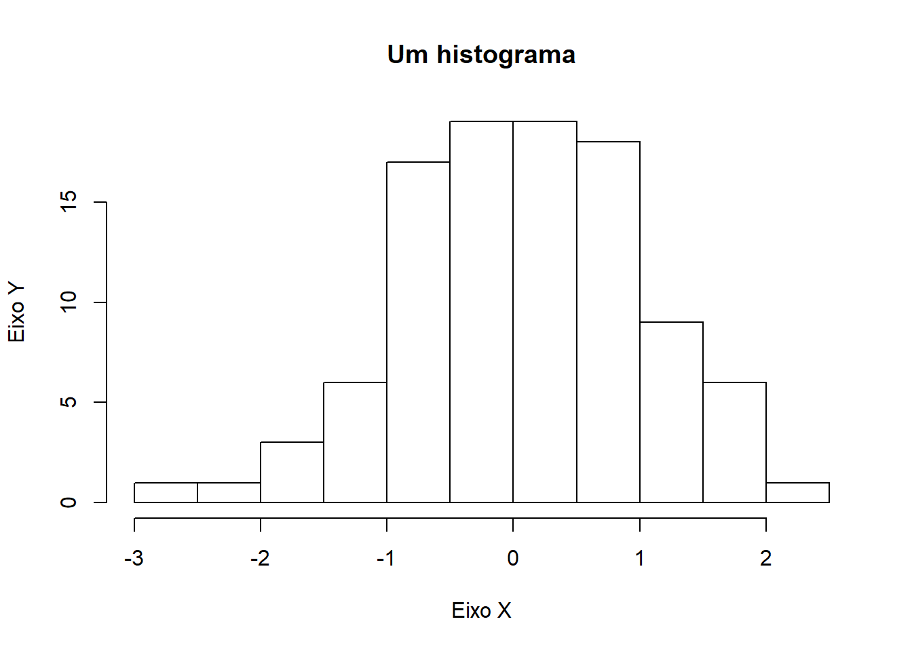
Mudamos a cor das barras com col.
hist(x, main = "Um histograma", xlab = "Eixo X", ylab = "Eixo Y", col = "red")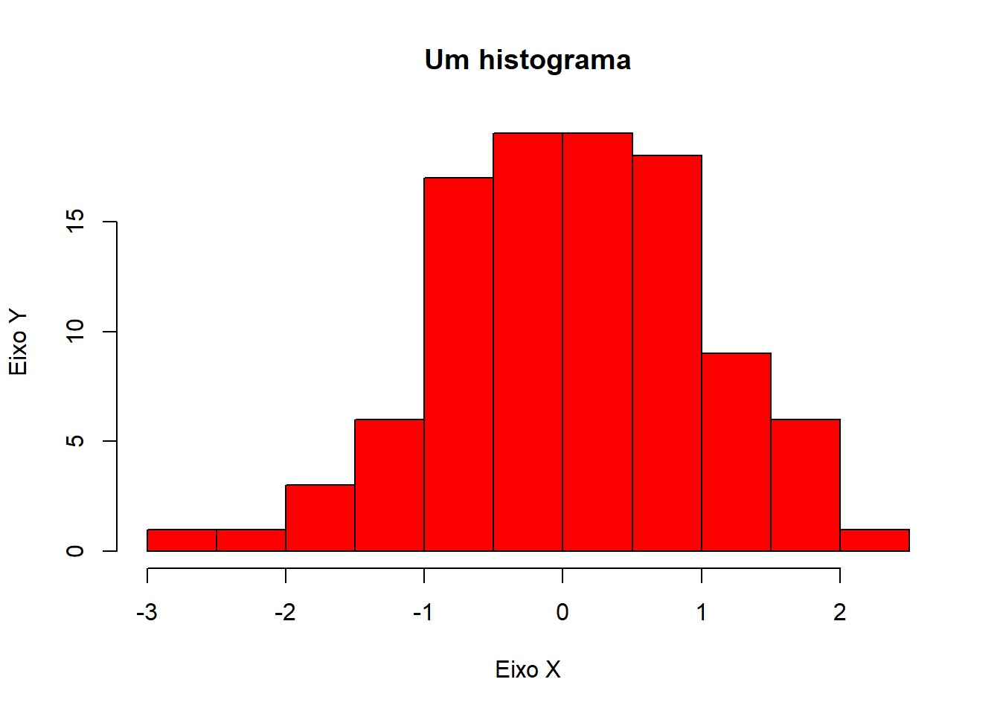
E a espessura das barras (i.e., o número de elementos por barra) com breaks.
hist(x, main = "Um histograma", xlab = "Eixo X", ylab = "Eixo Y", col = "red", breaks = 50)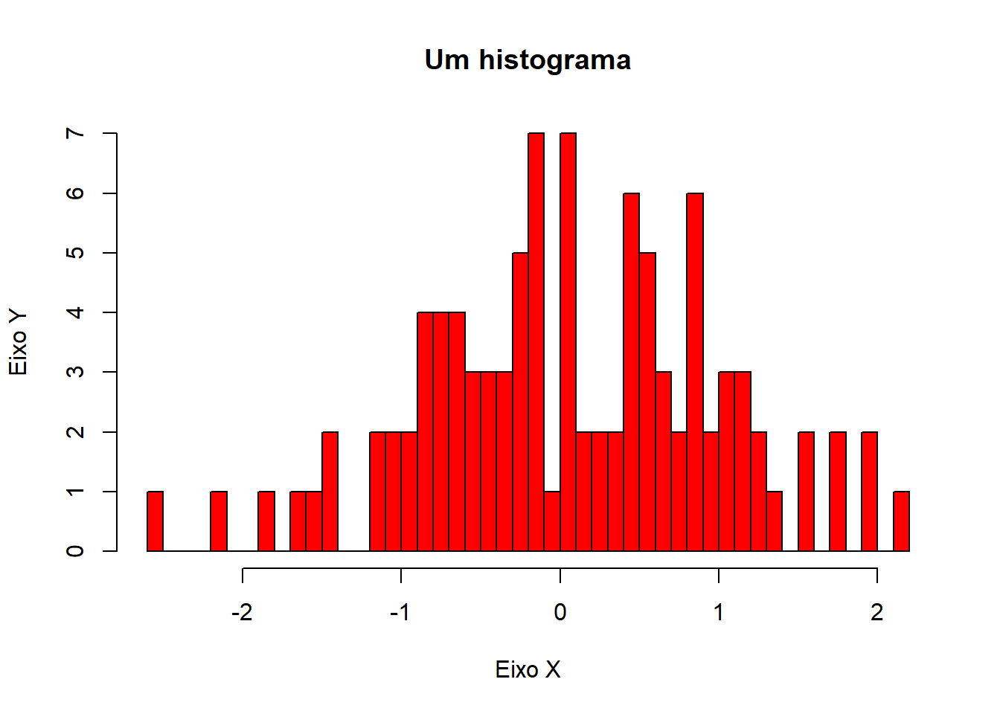
Para organizar melhor o código, podemos quebrá-lo em linhas - nada mudará na sua execução, mas fica visualmente mais simples de entender o que estamos fazendo.
hist(x, main = "Um histograma",
xlab = "Eixo X",
ylab = "Eixo Y",
col = "red",
breaks = 50)Para visualizar relações bivariadas, o gráfico de pontos (scatterplot) geralmente é a melhor opção. Criamos ele com a função plot.
x <- rnorm(100)
y <- rnorm(100)
plot(y ~ x)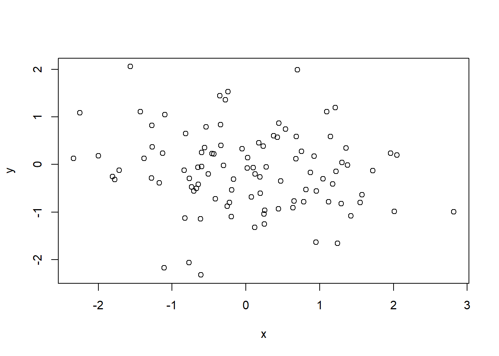
# plot(x, y) é a mesma coisaTambém podemos alterar uma série de elementos do gráfico. Vamos, novamente, mudar títulos e cores.
plot(y ~ x, main = "Um scatterplot",
xlab = "Eixo X",
ylab = "Eixo Y",
col = "red")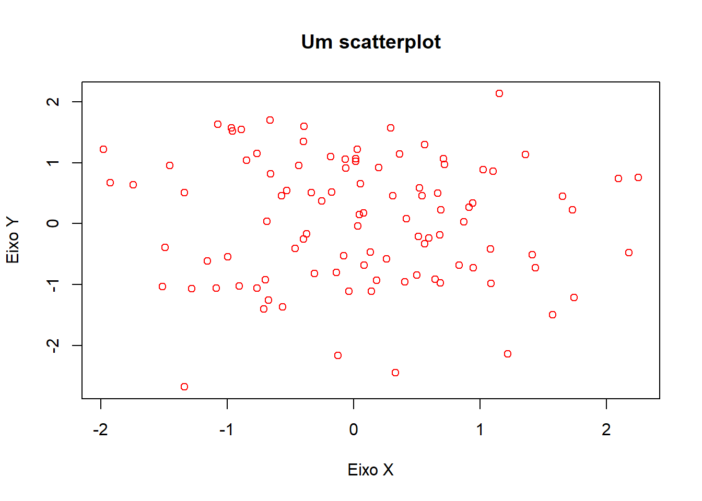
Ainda podemos alterar o formato dos eixos - deixando-os abertos, por exemplo.
plot(y ~ x, main = "Um scatterplot",
xlab = "Eixo X",
ylab = "Eixo Y",
col = "red",
bty = "n")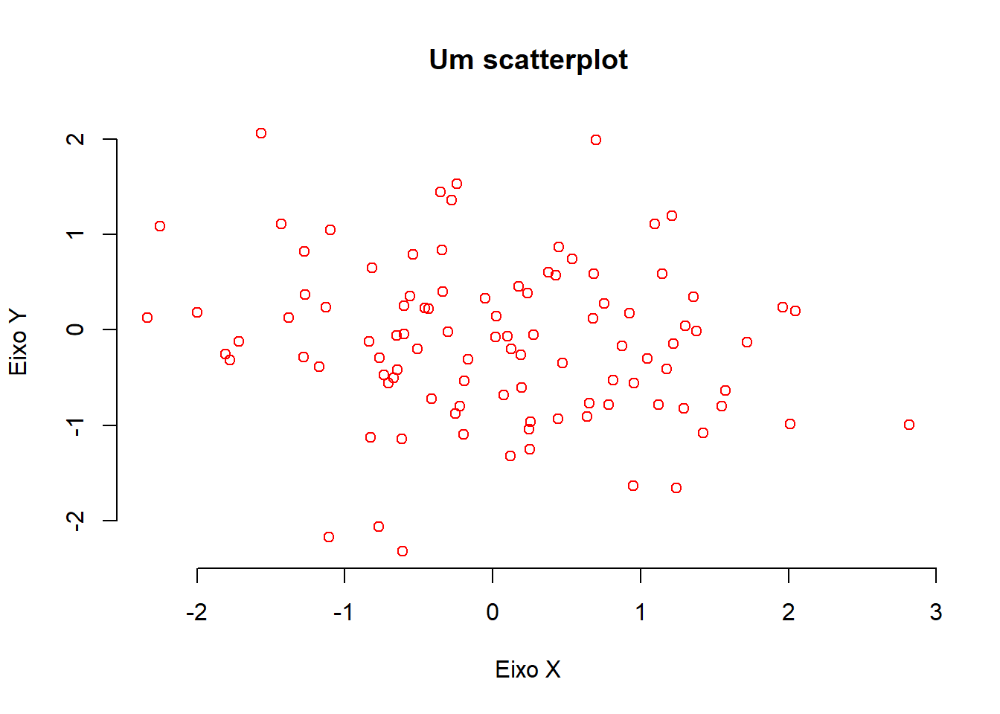
E depois mudar o formato dos pontos.
plot(y ~ x, main = "Um scatterplot",
xlab = "Eixo X",
ylab = "Eixo Y",
col = "red",
bty = "n",
pch = 2) # pch muda o formato dos pontos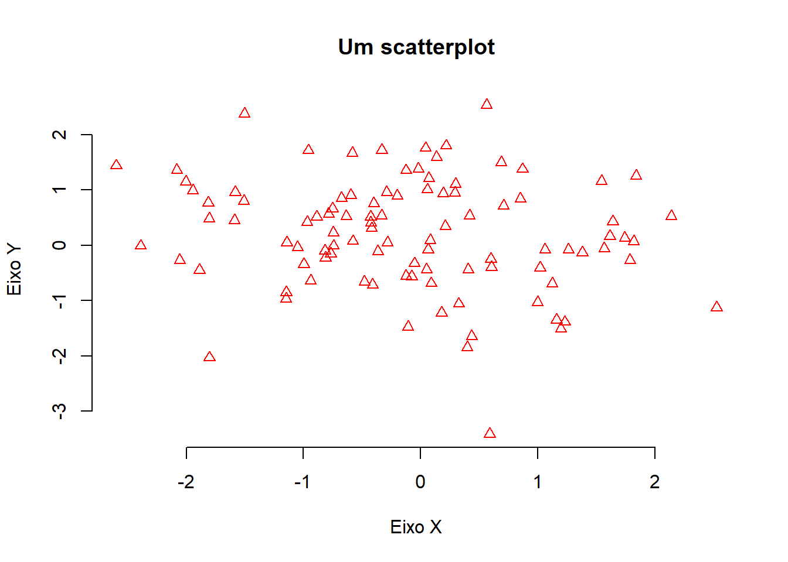
Os valores mais comuns de pch são (veja outros aqui):
0, para quadrado vazado;1, para círculo vazado;2, para triângulo vazado;16, para círculo pequeno sólido;19, para círulo grande sólido.Regressões nos ajudam a entender a relação entre uma variável quantitativa e uma ou mais variáveis explicativas. E o modelo mais usado para realizar este tipo de análise, sem dúvidas, é a regressão linear, que modela a relação entre variáveis dependente e independente de forma linear - a reta que melhor se ajusta aos dados. No R, podemos estimar regressões como estas com a função lm, de linear model.
Vamos começar com um exemplo simples: modelar a relação entre dois vetores numéricos.
x <- rnorm(50)
y <- rnorm(50)
modelo <- lm(y ~ x) # estima um modelo linear e salva os resultados no objeto 'modelo'
class(modelo) # a classe do objeto 'modelo' vira 'lm'
summary(modelo) # usamos a função 'summary' para exibir os resultadosO output da função summary nos dá um panorama geral dos resultados do modelo. Em ordem:
Call, no topo, indica a fórmula que passamos para o modelo;Residuals mostra a distribuição dos resíduos;Coefficientes reporta as estimativas do modelo:
Estimate reporta os coeficientes;Std. Error reporta erros-padrão;t value reporta t valores;Pr(>|t|) reporta p-valores.Residual standard error, Multiple R-squared, Adjusted R-squared e F-statistic mostram algumas estatísticas de ajustes do modelo.Usando a função plot vista anteriormente, podemos plotar a reta estimada nos dados originais.
plot(y ~ x, main = "Regressão linear")
abline(modelo) # a função abline toma um objeto 'lm' e plota a reta da regressão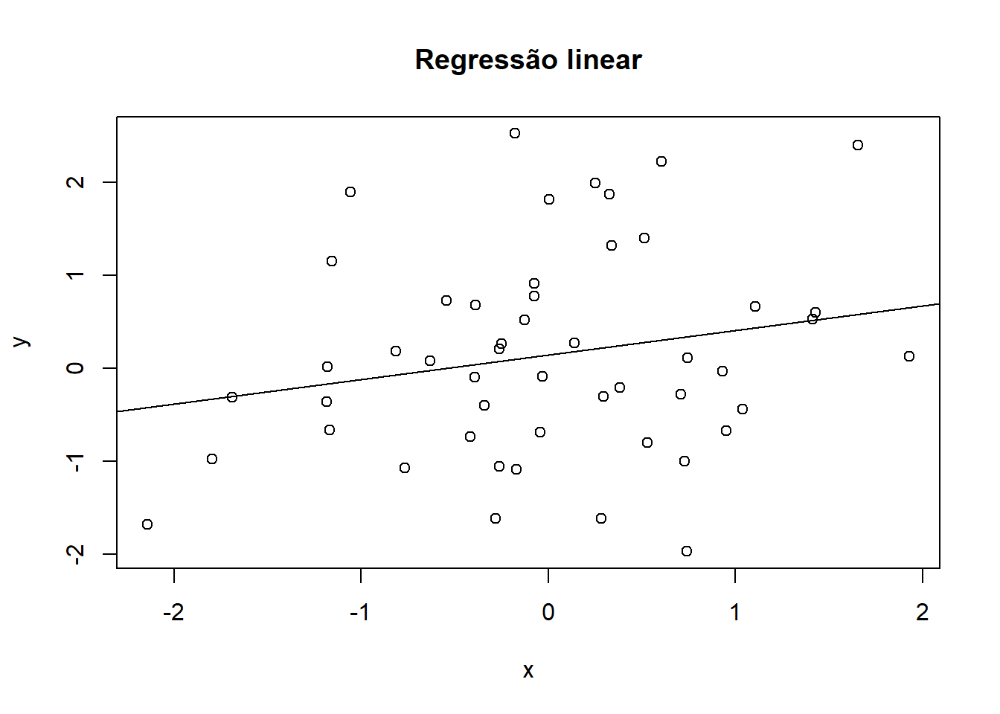
Também podemos usar a função plot para termos uma noção geral do ajuste de um modelo.
plot(modelo)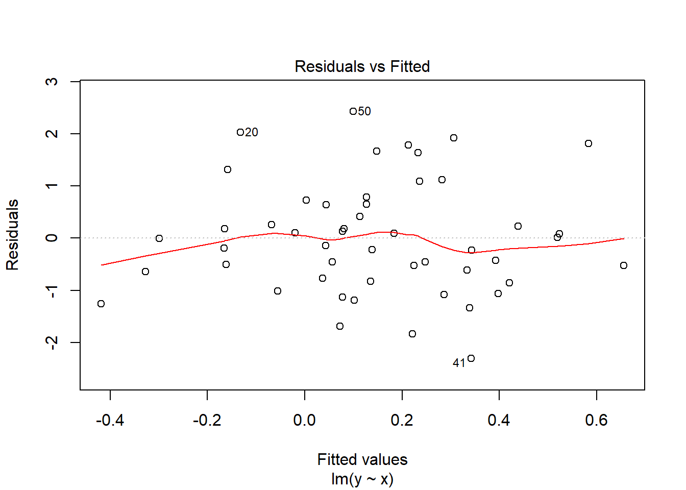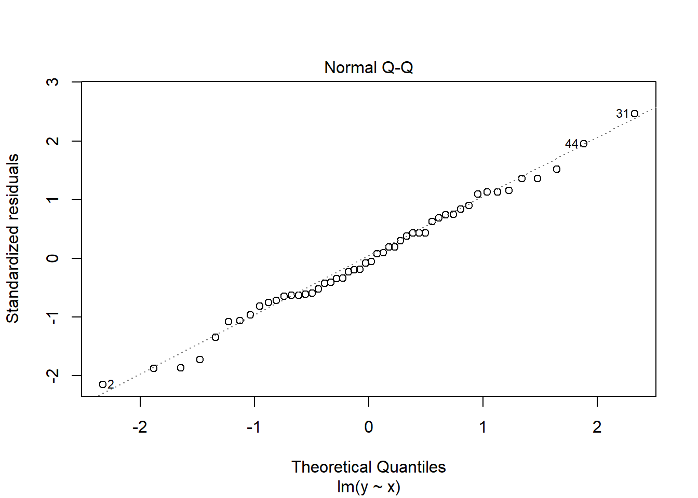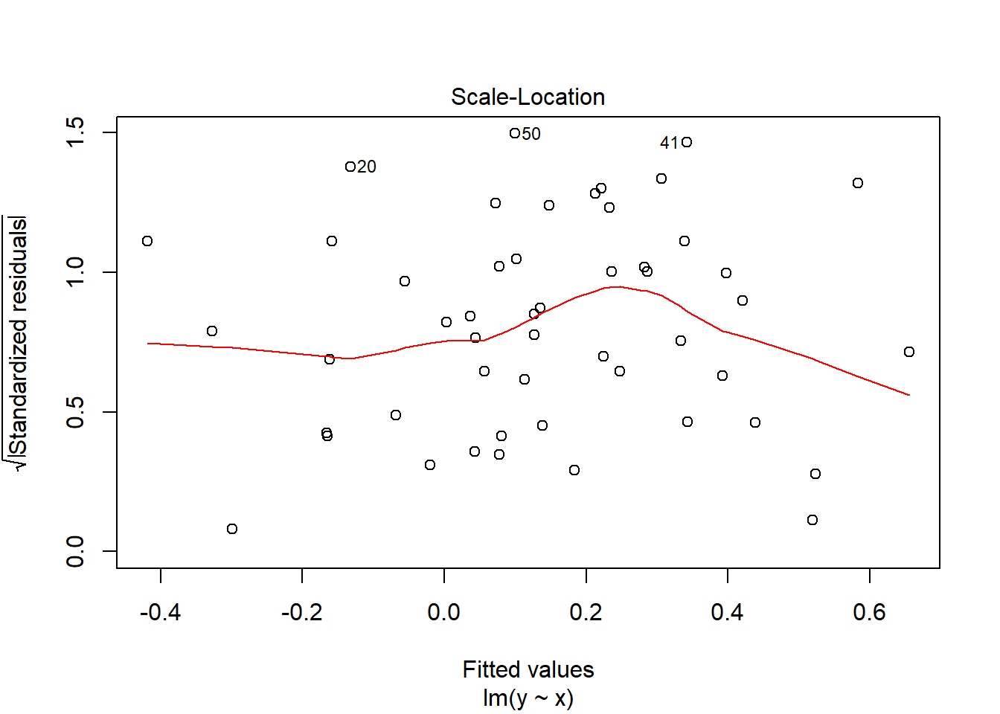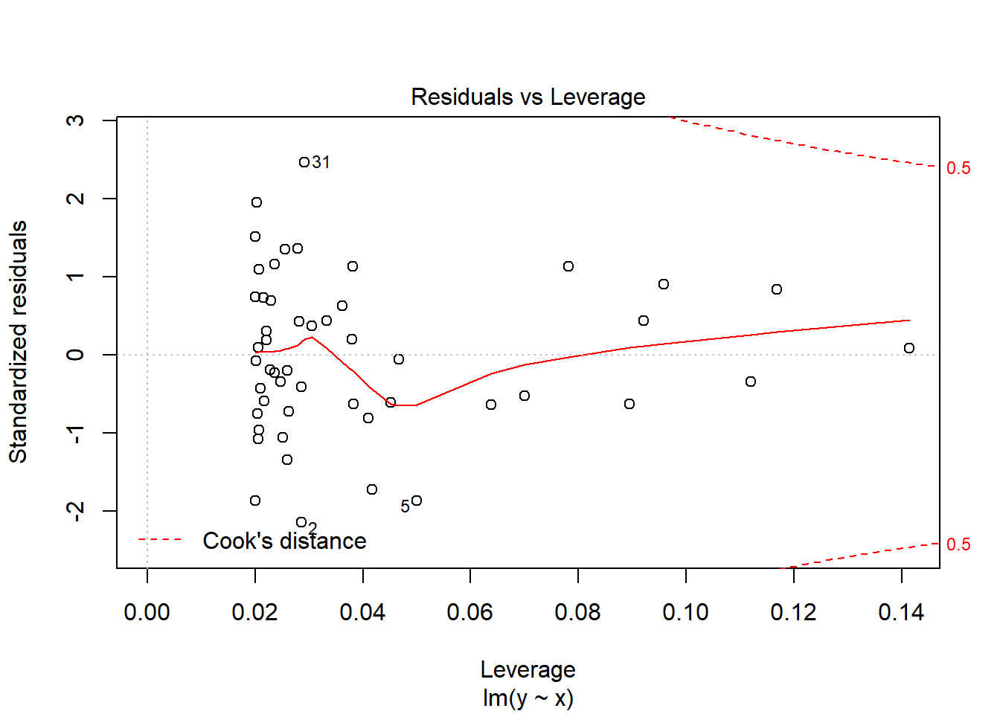
Modelos lineares podem ter mais de uma variável independente. Usamos a mesma função, lm, para fazer isto - a única coisa que modificamos é a fórmula passada ao modelo.
x <- rnorm(50)
z <- rnorm(50)
y <- rnorm(50)
modelo <- lm(y ~ x + z) # adicionamos variável com o operador '+'
summary(modelo)Com mais de duas variáveis independentes no modelo, visualizar a relação entre elas e a variável dependente não é tão simples: o efeito de x e z são controlados por z e x, respectivamente. O que podemos fazer é ver o efeito parcial de cada preditor com a função termplot. (Na verdade, existem várias outras maneiras de fazer isto, mas a maioria delas pressupõe conhecimentos adicionais de R; uma boa referência pode ser vista aqui).
termplot(modelo)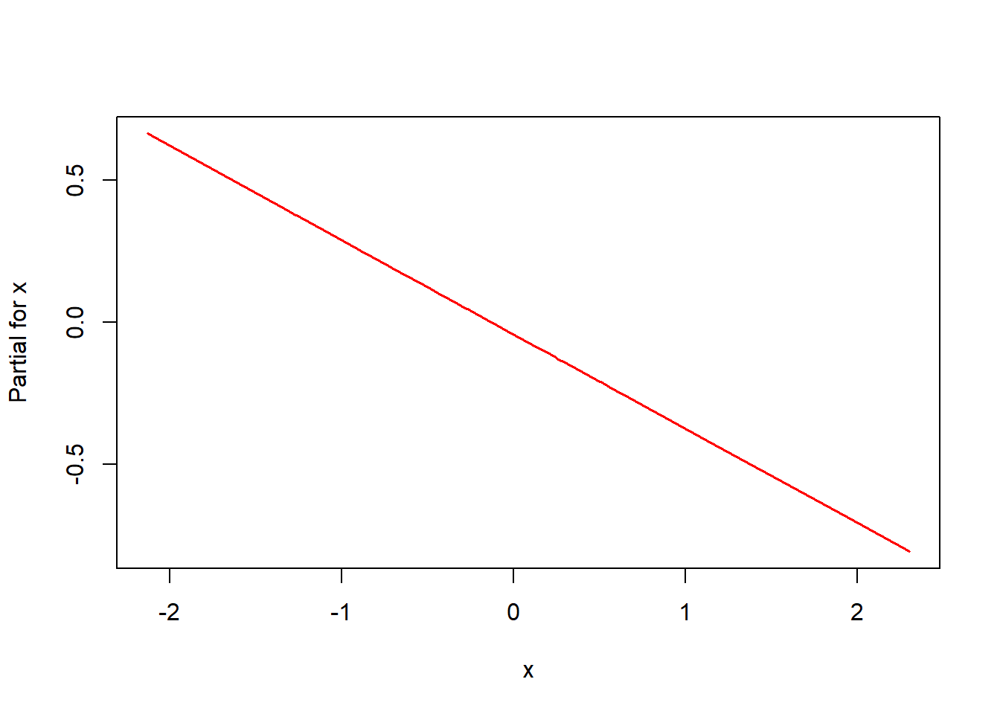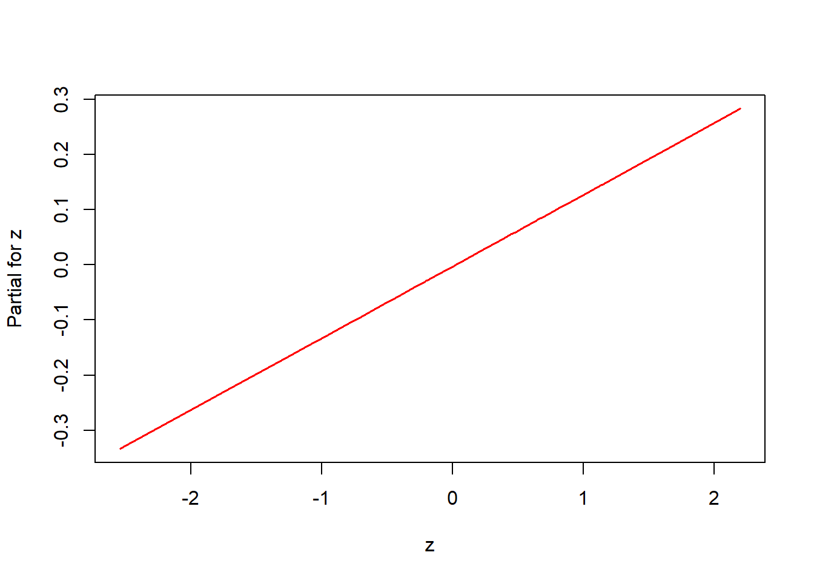
Em algumas situações, a relação linear entre duas variáveis pode ser diferente para grupos diferentes. Nestes casos, adicionar uma variável ao modelo indicando estes grupos pode ser uma boa opção.
x <- rnorm(100)
grupo <- rbinom(100, 1, prob = 0.5) # 'rbinom' serve para criar uma variavel com distribuicao binomial
y <- rnorm(100) + grupo # adicionando 'grupo', 'y' sera' afetada por ela
modelo <- lm(y ~ x + grupo)
summary(modelo)O output de summary já nos indica que a variável grupo tem efeito preditivo significativo sobre y. Com a função plot, podemos ter uma noção visual mais clara disto (usaremos a função points, que, assim como lines, serve para plotar pontos após um gráfico já ter sido criado).
plot(y ~ x, type = "n") # 'type = n' plota apenas os eixos do gráfico
points(y[grupo == 1] ~ x[grupo == 1], col = "red")
points(y[grupo == 0] ~ x[grupo == 0], col = "blue")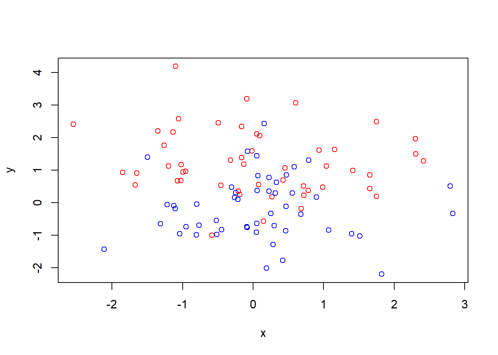
É possível perceber pelo gráfico que as observações em vermelho (grupo == 1) tendem a ter maiores valores no eixo Y. O que vamos fazer, agora, é plotar uma reta de regressão para cada grupo, tomando nosso modelo para fazer isto.
Usaremos a função fitted para salvar os valores preditos do modelo e, com isto, plotaremos as retas usando a função lines (este exemplo pode parecer complicado, mas envolve apenas coisas que já vimos anteriormente; se tiver dúvidas, tente refazer este exemplo de outras maneiras, até entender).
plot(y ~ x, type = "n", main = "Regressão com dummy")
points(y[grupo == 1] ~ x[grupo == 1], col = "red") # p
points(y[grupo == 0] ~ x[grupo == 0], col = "blue")
lines(x[grupo == 1], fitted(modelo)[grupo == 1], col = "red")
lines(x[grupo == 0], fitted(modelo)[grupo == 0], col = "blue")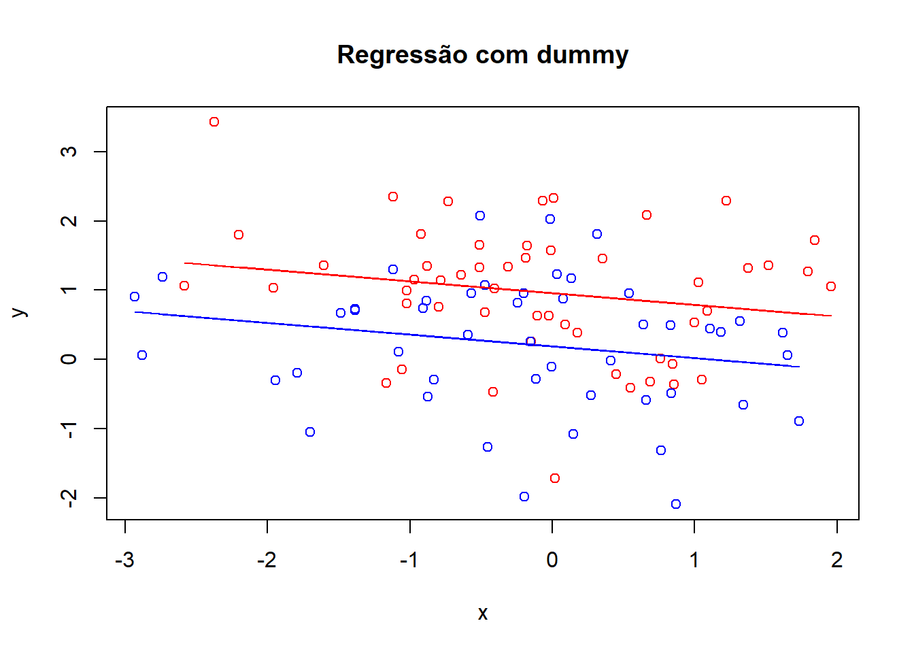
O exemplo anterior mostra como estimar uma reta para cada grupo num modelo linear, todas com a mesma inclinação. Podemos relaxar isto utilizando termos multiplicativos (x * grupo) para fazer com que cada reta se ajuste individualmente ao grupo de dados. Novamente, só modificamos a fórmula passada para a função lm para fazer isto.
modelo <- lm(y ~ x * grupo) # reestimamos o modelo com o termo multiplicativo
# Criamos novamente o gráfico
plot(y ~ x, type = "n", main = "Regressão com termo multiplicativo")
points(y[grupo == 1] ~ x[grupo == 1], col = "red")
points(y[grupo == 0] ~ x[grupo == 0], col = "blue")
lines(x[grupo == 1], fitted(modelo)[grupo == 1], col = "red")
lines(x[grupo == 0], fitted(modelo)[grupo == 0], col = "blue")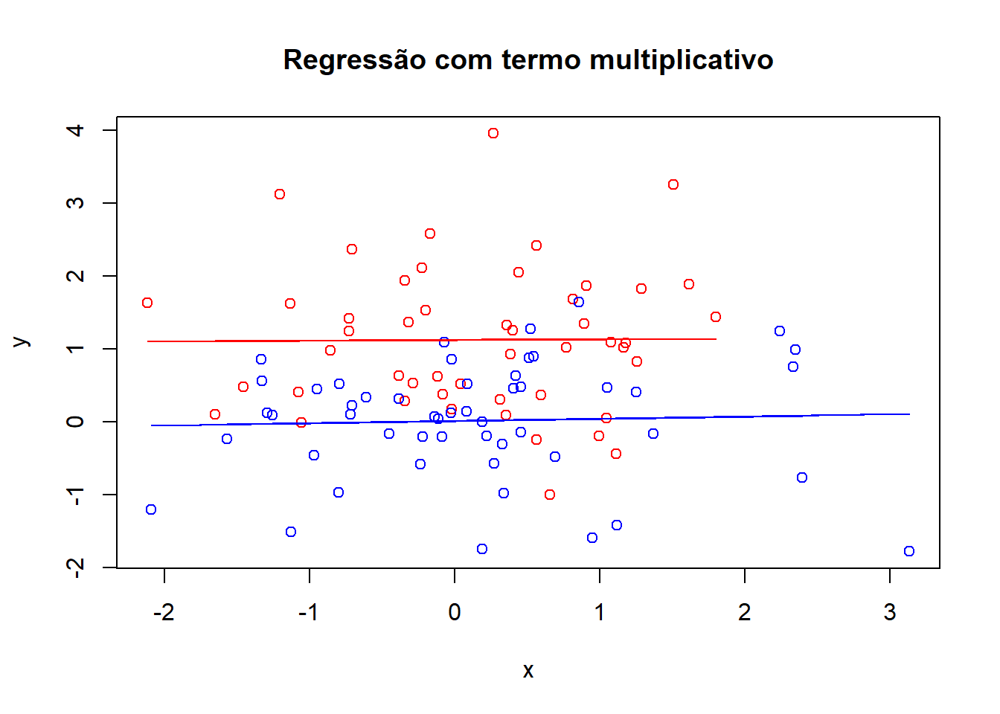
Relações entre duas variáveis nem sempre são apenas lineares: às vezes, elas assumem algum tipo de curva. Ainda que um modelo linear nem sempre seja a melhor opção para modelar relações como estas, podemos adaptá-lo para dar conta disto. A solução, neste caso, é bem simples: passamos a variável independente ao quadrado para a função lm.
x <- rnorm(100)
x2 <- x^2
y <- x2 + rnorm(100) # adicionando 'x2' a 'y', fazemos com que a relação entre eles seja quadrática
plot(y ~ x, main = "Relação quadrática")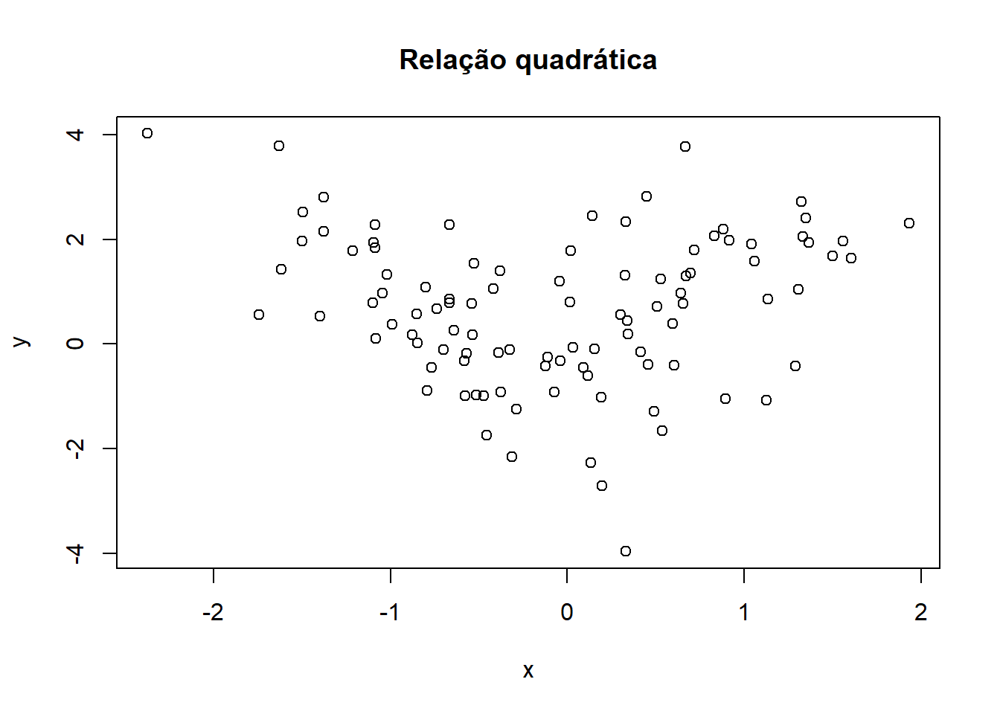
Só precisamos passar x e x2 para a fórmula na função lm para estimarmos a relação quadrática. Depois, para criarmos o gráfico, precisaremos criar dois novos vetores: 1) novo_x, que será um vetor sequencial contendo os valores máximos e mínimos de x como referências; e, 2), pred, que criaremos usando a função predict, que serve para usar um modelo que já estimamos para fazer predições em cima de novos dados (também usaremos a função list para passar x e x2 para dentro da função simultaneamente).
modelo <- lm(y ~ x + x2)
plot(y ~ x, main = "Relação quadrática")
novo_x <- seq(min(x), max(x), by = 0.1)
pred <- predict(modelo, list(x = novo_x, x2 = novo_x^2))
lines(novo_x, pred)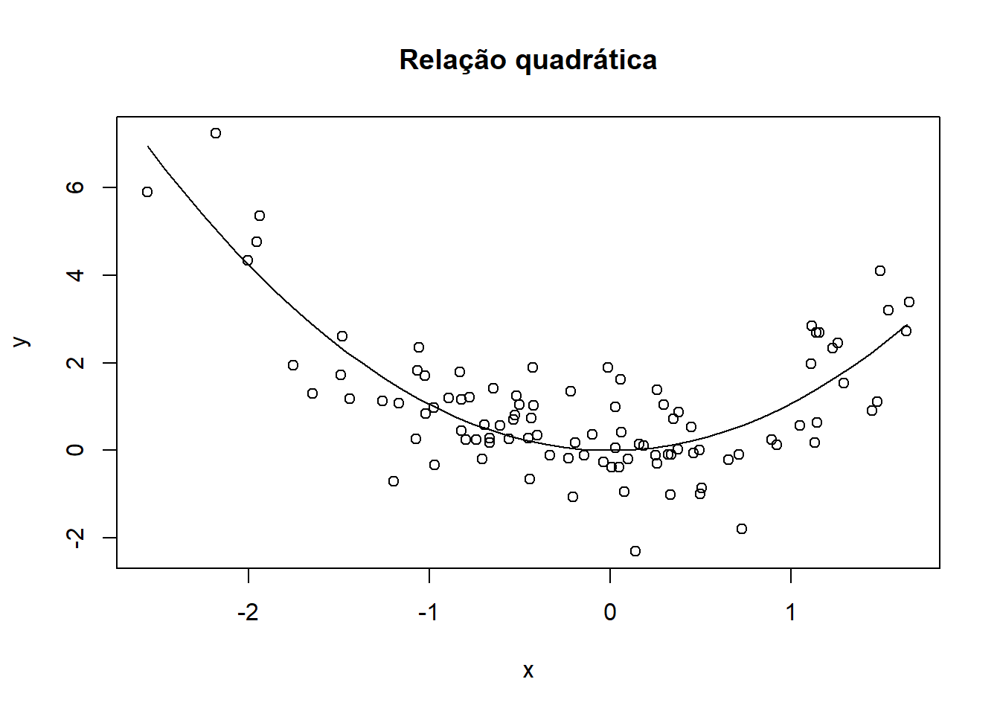
O mesmo procedimento também serve para uma relação cúbica.
x <- rnorm(100)
x2 <- x^2
x3 <- x^3
y <- x3 + rnorm(100)
modelo <- lm(y ~ x + x2 + x3)
plot(y ~ x, main = "Relação cúbica")
novo_x <- seq(min(x), max(x), by = 0.1)
pred <- predict(modelo, list(x = novo_x, x2 = novo_x^2, x3 = novo_x^3))
lines(novo_x, pred)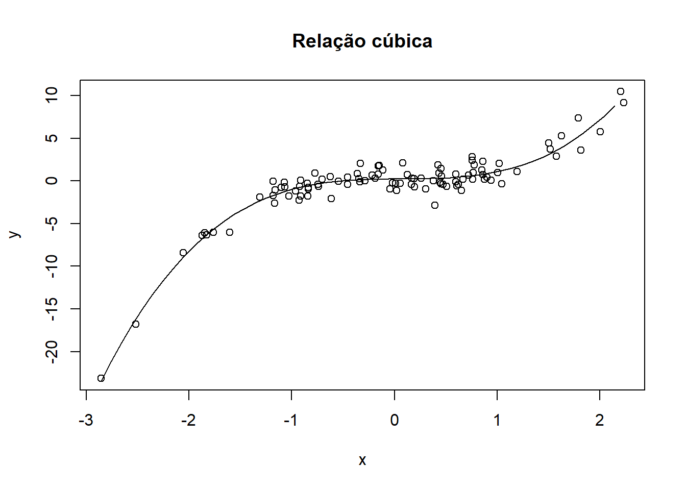
O conteúdo deste guia pode parecer simples, mas é somente com um pouco de prática que conseguimos identificar detalhes que passam desapercebidos. Por isso, recomendo a realização dos seguintes exercícios para afixar o que foi visto até aqui.
Arrume as seguintes operações para que compilem sem erros:
"2" + "2"
(10 + (10)) \ 10
sum[2, 2]
"3^3"
3 x 3Arrume (ou não) essas atribuições de objetos. Tente entender o que o operador atribuidor faz.
texto < - "um texto qualquer"
outro texto < - "mais um texto"
x < 2
y = 0
z <- "1"O que está errado no código abaixo (o objetivo é criar um objeto x que armazene o número 100)?
dez <- 10
cinco <- dez - 5
y <- dez <- cinco
x <- 10 * dezDe novo, arrume o código:
print(uma frase qualquer)
seq(1 5)
sum(log(-2), sum(2 + 2))
abs("-dez")
paste("um", "exemplo", "de", "texto')
plot(10, ?)O que há de errado com os exemplos abaixo?
c("1", 0)
meu_vetor <- c("texto", "do," "vetor")
c(c(1, 2), c(3, 4), 5:6
c(-1.3,
-0.3,
-0.6,
-0.6
-0.2)Qual é a média e a mediana dos vetores abaixo?
c(1, 45, 67, 2.35, 5.6)
c(0.275, -0.883, 1.69, -0.589, -0.778, 1.318, -0.235, -2.166)
c(0.3, 0, 0)
c(0, -1, 0, -1, 1, NA, -2, 1, 1, -2)Qual é a somatória (i.e., o valor da soma de todos os elementos) do vetor abaixo? (Dica: use uma função)
x <- c(232, 129, 125, 84, 157, 119, 196, 174, 202, 104)Crie um vetor x com 10 elementos, de 1 a 10. Depois, multiplique esse vetor por 5 e salve seu resultado. Qual é a média dele?
O que o seguinte código faz (use comentários para escrever sua explicação)?
y <- seq(5, 25, by = 5)
x <- seq(10, 50, by = 10)
y * x{kind=link}